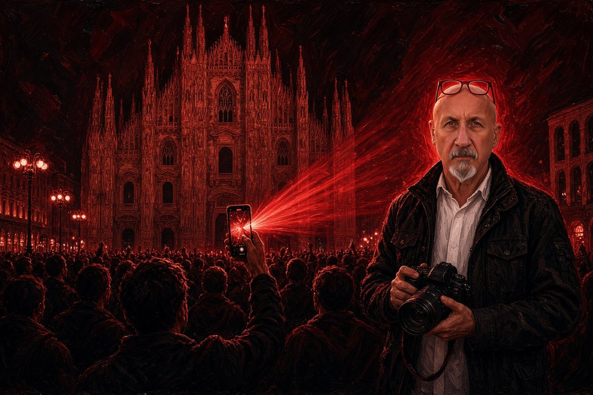

Cronaca · 27 ottobre 2026
Le tre domande di Molinari su Siher e la difesa della sua professoressa

In televisione la relatrice di tesi di Youssef Siher parla di gogna mediatica. Ma le carte del fermo non riguardano i commenti dei follower: riguardano i messaggi scritti da chi quella pagina la gestiva.
di Franco Zanghì
Il 26 ottobre, nello studio di Diario del giorno su Rete 4, Elisa Giunchi, docente dell'Università Statale di Milano e relatrice di tesi di Youssef Siher, difende il suo ex studente. Dice che contro di lui c'è una gogna mediatica vergognosa, che non è un violento, che è un ragazzo timido e riservato. Aggiunge che vorrebbe cause per diffamazione contro i giornalisti che lo hanno definito la mente delle violenze di Milano. Su quello che Siher avrebbe scritto o fatto, però, precisa che non si pronuncia, perché le indagini sono in corso.
Nello stesso studio, Maurizio Molinari, che ha diretto Repubblica e La Stampa, pone la domanda che in queste ore gira sui social: se uno amministra un profilo dove altri scrivono che le banche vanno assaltate, ne risponde lui? È una domanda legittima, ma non è quella dell'inchiesta.
Di chi sono quelle parole
Secondo i primi accertamenti degli inquirenti, sulla pagina Instagram e sul gruppo Telegram del Movimento 17 ottobre potevano scrivere soltanto in due: Siher e la moglie, indagata anche lei. Nel provvedimento di fermo, come esempio di contenuto violento, la procura cita un post che dice: «Meloni dichiara guerra al futuro di questo paese, noi dichiariamo guerra a questo futuro infame». E un altro: «dobbiamo fare come la Francia». La pm le ha definite una dichiarazione di guerra continua.
Il gruppo Telegram, scrive la procura, nasce domenica 18 ottobre alle 19.58, il giorno dopo i saccheggi in centro a Milano. In pochi giorni gli iscritti superano gli 11.000. Sul computer di Siher gli agenti trovano due messaggi programmati, per le 14.31 e le 15.31 di sabato 24, con i luoghi dei nuovi raduni: non sono mai partiti, perché quella mattina lo hanno fermato.
Le tre domande, una per una
La prima riguarda il 7 ottobre. In un articolo del settembre 2024, ripubblicato sul suo Substack, Siher ha definito l'attacco di Hamas un atto rivoluzionario di decolonizzazione, e Hamas un movimento di liberazione nazionale. Il giorno stesso della strage, sotto i messaggi di solidarietà a Israele di Antonio Tajani e Matteo Salvini, da un profilo a suo nome era partito un «Allahu Akbar». Non è un reato, ma dice da che parte si è scelto di stare.
La seconda riguarda l'Egitto. Fra le carte, secondo Il Giorno, c'è un vademecum intitolato «Rivoluzione, istruzioni per l'uso», ispirato a un manuale della rivolta egiziana del 2011, che Molinari lega ai Fratelli Musulmani. Qui la ricostruzione regge meno: in piazza Tahrir i primi a scendere furono i movimenti giovanili, laici e organizzati sui social, e i Fratelli Musulmani arrivarono dopo, prendendosi le elezioni l'anno successivo. Quel manuale insegna a mobilitare la piazza, non è un testo islamista. La domanda semmai è perché un ricercatore italiano lo tenga nel computer.
La terza riguarda il silenzio. Siher non ha risposto agli inquirenti e non ha dato le password dei telefoni. Non rispondere, però, è un diritto previsto dal codice, e lo usano gli innocenti come i colpevoli: metterlo fra gli interrogativi è un passaggio che non regge.
Il paragone che farà discutere
Molinari, premettendo di essere garantista, si è spinto a chiedere se ci si trovi davanti a «un jihadista in doppio petto, come Kim Philby durante la guerra fredda», la spia sovietica che aveva fatto carriera dentro i servizi segreti inglesi. Resta una domanda, non una conclusione. Ma una cosa va notata: Siher ha fatto uno stage all'Ispi, ha scritto per il Fatto Quotidiano e un articolo per il Foglio. Le credenziali le aveva, e quello che scriveva sul 7 ottobre era pubblico.
Le ragioni degli altri
Nessuna delle accuse riguarda direttamente i saccheggi del 17 e 18 ottobre: la pagina è nata dopo. Chi indaga a Genova sui finanziamenti ad Hamas ha precisato che Siher non è mai stato intercettato. E c'è chi sostiene che il governo, con il decreto sicurezza appena approvato, cercasse un volto da mostrare. Sono obiezioni serie, e vanno tenute presenti.
Siher è indagato per istigazione a delinquere aggravata dalla finalità di terrorismo e per violenza organizzata nelle manifestazioni pubbliche, e con lui la moglie. Per entrambi vale la presunzione d'innocenza fino alla sentenza definitiva. La difesa dei commenti degli altri, però, qui non regge: le parole sotto accusa le ha scritte chi la pagina la gestiva.
Come è andata a finire
Il 28 ottobre la giudice per le indagini preliminari Tiziana Landoni non ha convalidato il fermo e ha respinto la richiesta di carcere: per lei nei post di Siher non si prospettano azioni violente. L'indagine della procura resta aperta.
Fonti
- Tgcom24, «Movimento 17 ottobre, la professoressa di Youssef Siher: Contro di lui gogna mediatica», 26 ottobre 2026
- Maurizio Molinari, post sul suo profilo con l'intervento a Diario del giorno, Rete 4, 26 ottobre 2026
- Il Post, «Di cosa è accusato Youssef Siher», 26 ottobre 2026
- Ansa, «La pm di Milano: I messaggi di Siher una dichiarazione di guerra continua», 26 ottobre 2026
- Il Giorno, «I pm: La guerra di Siher», 27 ottobre 2026
- Youssef Siher, «Islam e sinistre occidentali: falsi amici?», Substack, originale su Voice Over del 5 settembre 2024
- Adnkronos, «Youssef Siher, il video del 2023 e l'articolo sul 7 ottobre», 24 ottobre 2026
- Il Post, «Youssef Siher è stato scarcerato», 28 ottobre 2026
Il vademecum ispirato al manuale egiziano del 2011 è attribuito al Giorno; un'altra testata scrive che nel computer non è stata trovata traccia di istruzioni. Il numero degli iscritti al canale Telegram è quello indicato dalla procura nel provvedimento di fermo.